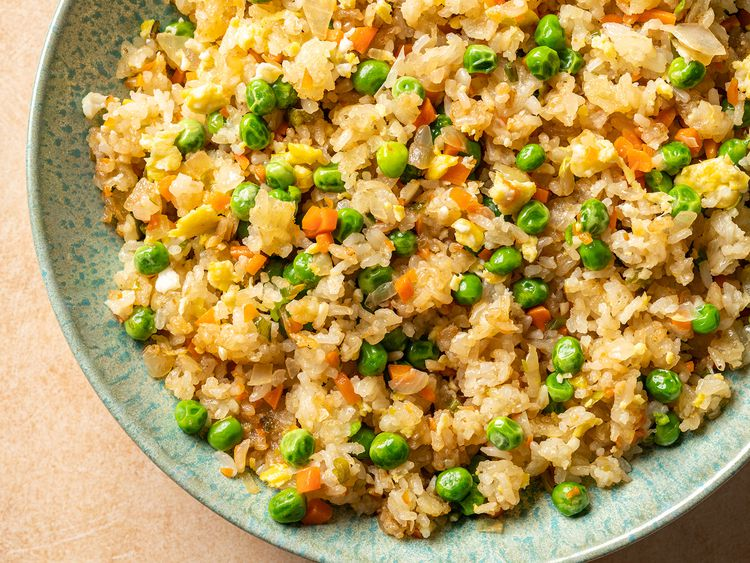

~Yummy~ Fried Rice ~Yummy~

Description
Fried rice is a classic Chinese dish that is made with cooked rice, vegetables, and a variety of seasonings.
It is a versatile dish that can be made with a variety of ingredients, such as eggs, meat, and seafood.
This dish is easy to make and is perfect for using up leftover rice and vegetables.
Ingredients
- 3 cups cooked rice
- 1/2 cup frozen peas and carrots
- 1/2 cup diced onion
- 2 cloves of garlic, minced
- 2 eggs
- 2 tbsp soy sauce
- 1 tbsp oyster sauce
- 1/2 tsp sesame oil
- 2 tbsp vegetable oil
Steps
- Heat the vegetable oil in a large skillet over medium-high heat.
- Add the garlic and onion and cook until fragrant.
- Push the garlic and onion to one side of the skillet and add the eggs to the other side.
- Scramble the eggs until cooked through, then mix with the garlic and onion.
- Add the peas and carrots and cook until heated through.
- Add the rice, soy sauce, oyster sauce, and sesame oil.
- Stir to combine and cook for another 2-3 minutes.
- Season with salt and pepper to taste.
- Enjoy!